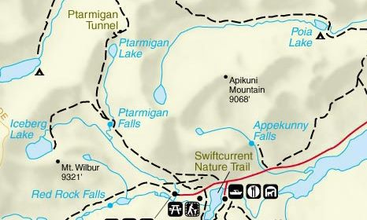

Iceberg lake in Glacier National Park is 9.7 miles roundtrip. This beautiful hike has outstanding views of wildflowers and Alpine Lake. This trail is know for grizzly bears and cow moose.

As you reach Iceberg lake you are sitting at an elevation of 6,094 feet. You will see icebergs floating in the lake as it recives little sunshine allowing ice and snow to accumulate on the waters surface and along the surrounding cliff walls.